Temple structure
Help complete the construction, bricks, cement, sand, ironwork, granite, tiles and essential site works.
Jai Maa Kali
Shree Shree Kali Mata Temple Trust A sacred place for worship, culture and communityVisakhapatnam, Andhra Pradesh
Help bring the Shree Shree Kali Mata Temple & Siva Temple to life - a Dakshineswar-inspired sacred home for worship, cultural gathering and shared blessings.
Marripalem VUDA Layout, Rockdale School Down Lane, Visakhapatnam 09.
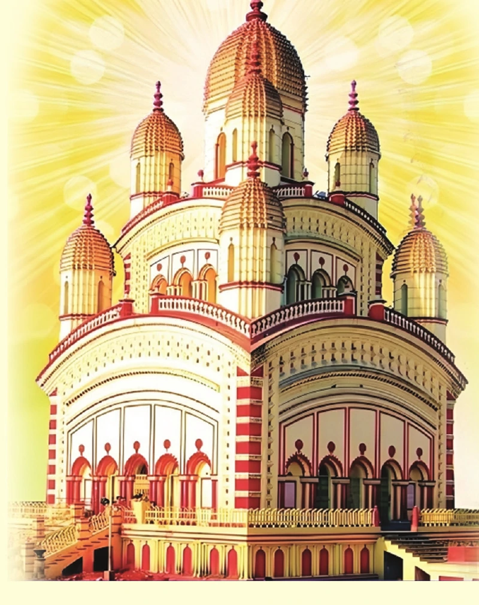
A heartfelt appeal to devotees
In Visakhapatnam’s Marripalem VUDA Layout, a devoted community has begun to raise Shree Shree Kali Mata Temple & Siva Temple - brick by brick, prayer by prayer. It is being built as a spiritual home where devotees can gather, celebrate, and share the divine energy of Maa Kali.
Drawing inspiration from the spiritual presence and architectural tradition of the Dakshineswar Kali Temple in Kolkata, this temple is a heartfelt offering for Visakhapatnam. It will be a place for worship, festivals, cultural gatherings and the quiet strength of shared faith.
Every offering, large or small, brings this sacred vision closer to completion - helping establish the deities, complete the temple structure and create welcoming facilities for devotees.
Explore ways to contribute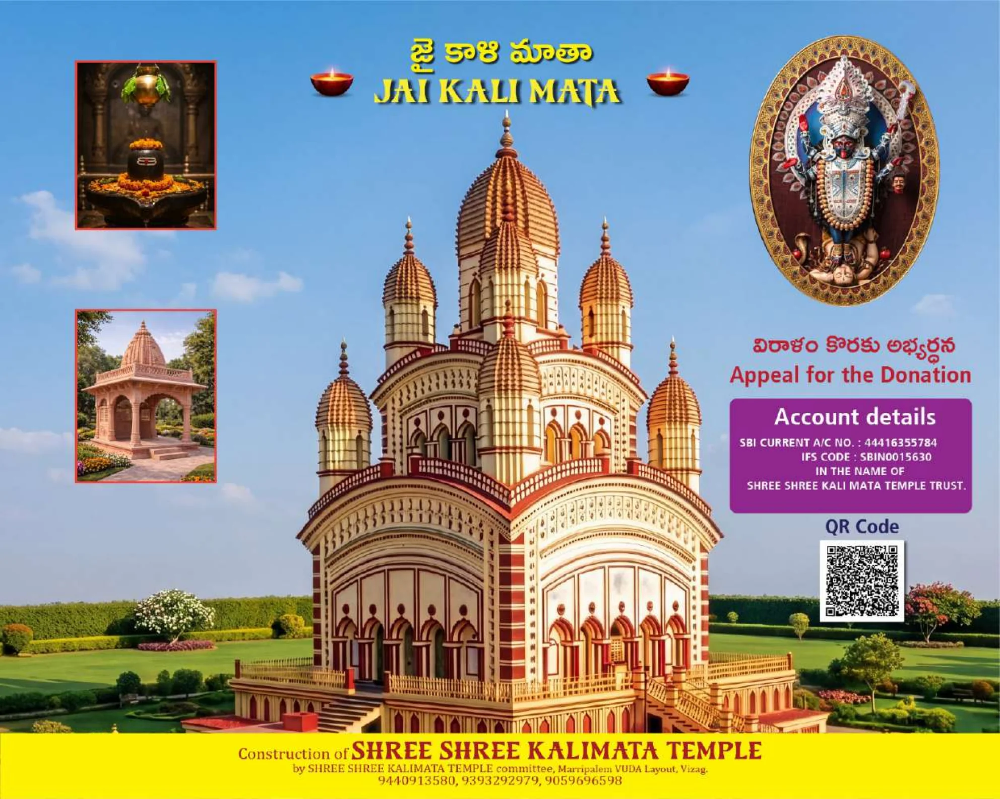
Every donation is a step closer to fulfilling our vision.
- Shree Shree Kali Mata Temple TrustFollow the journey from the first prayers and land preparation to the temple structure now rising at the site.
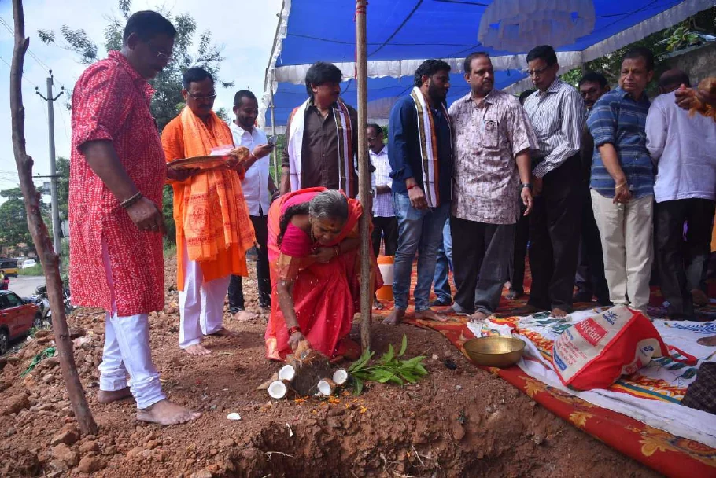
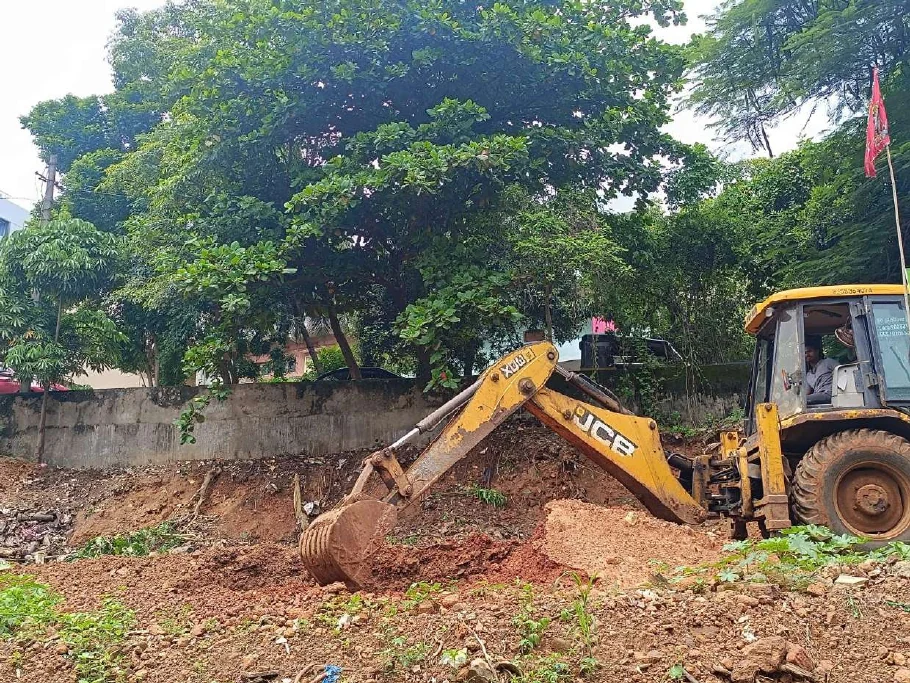
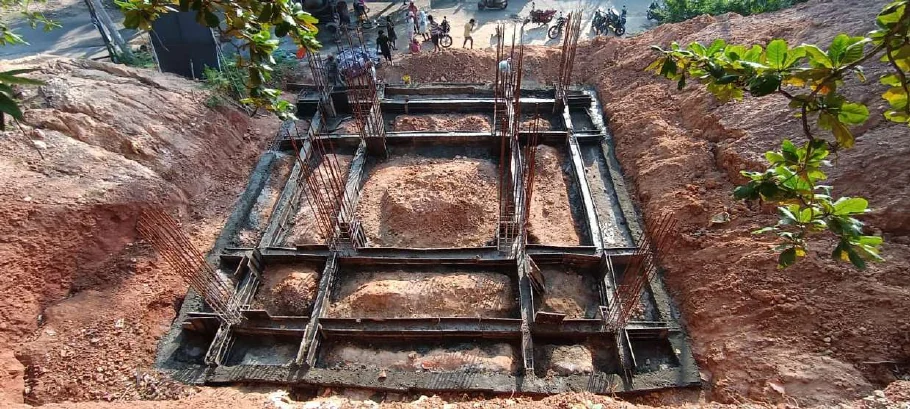
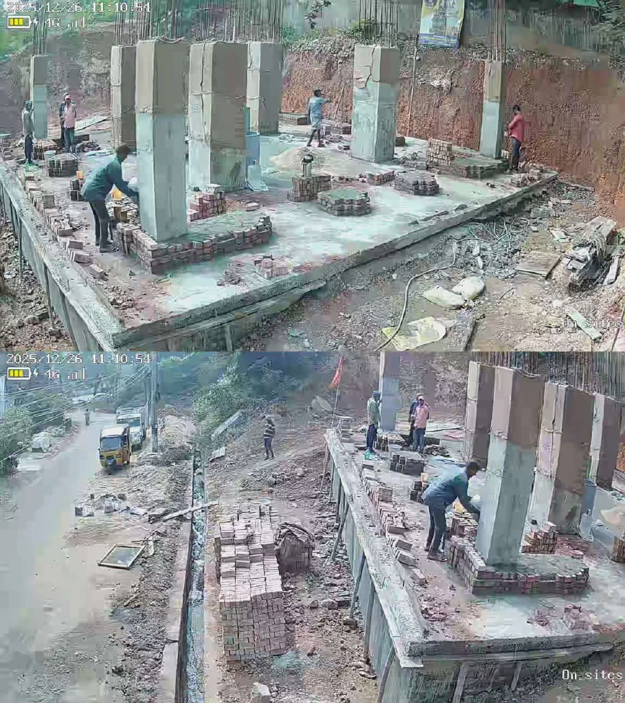
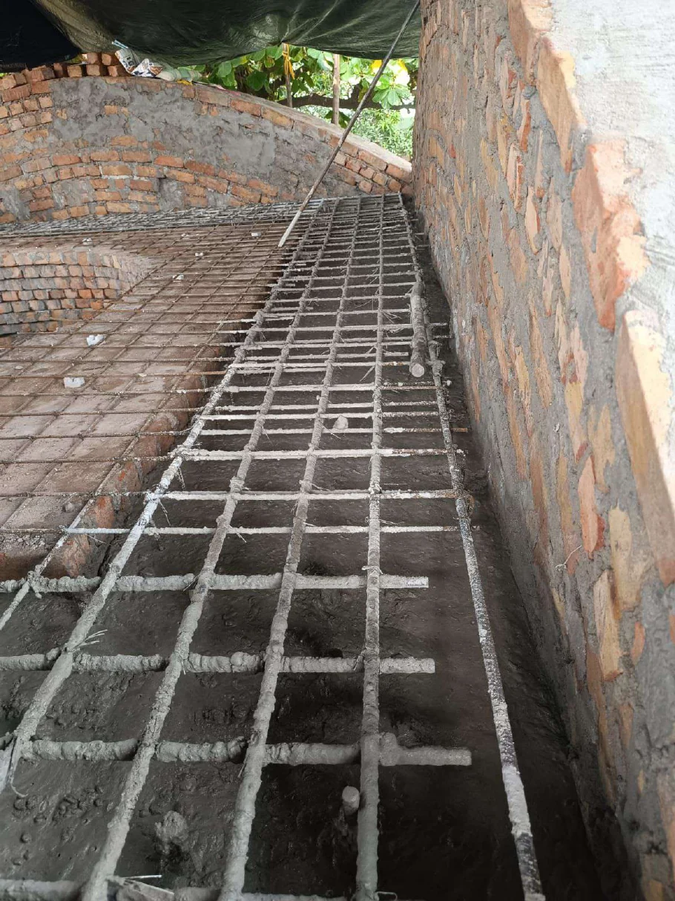
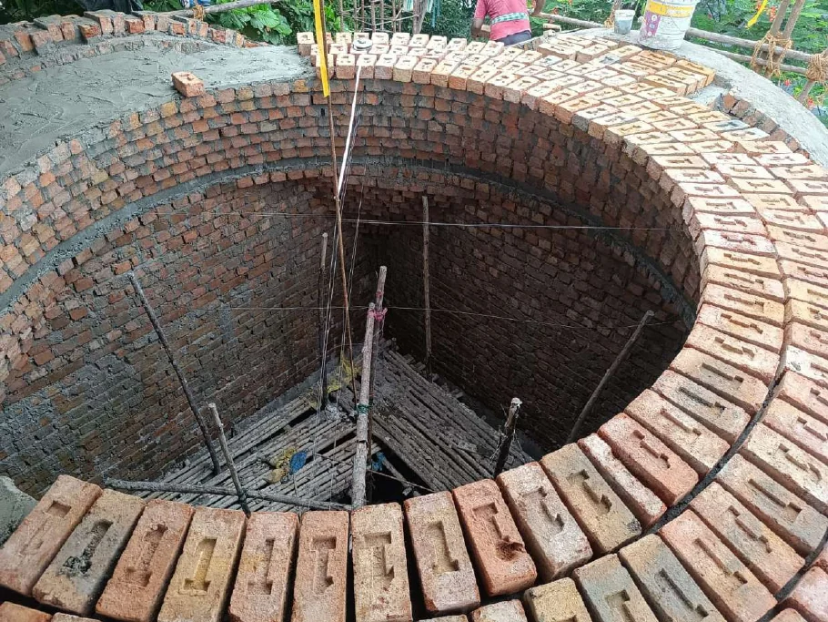
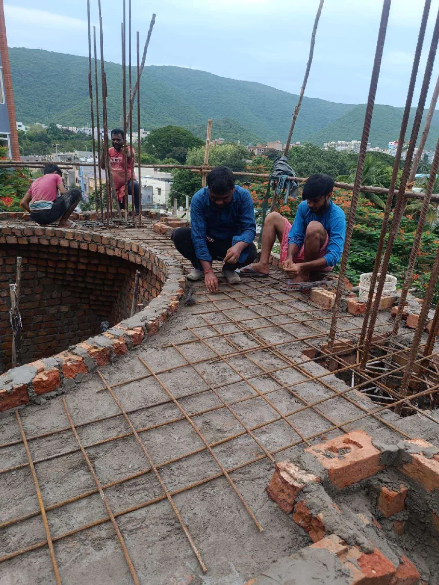
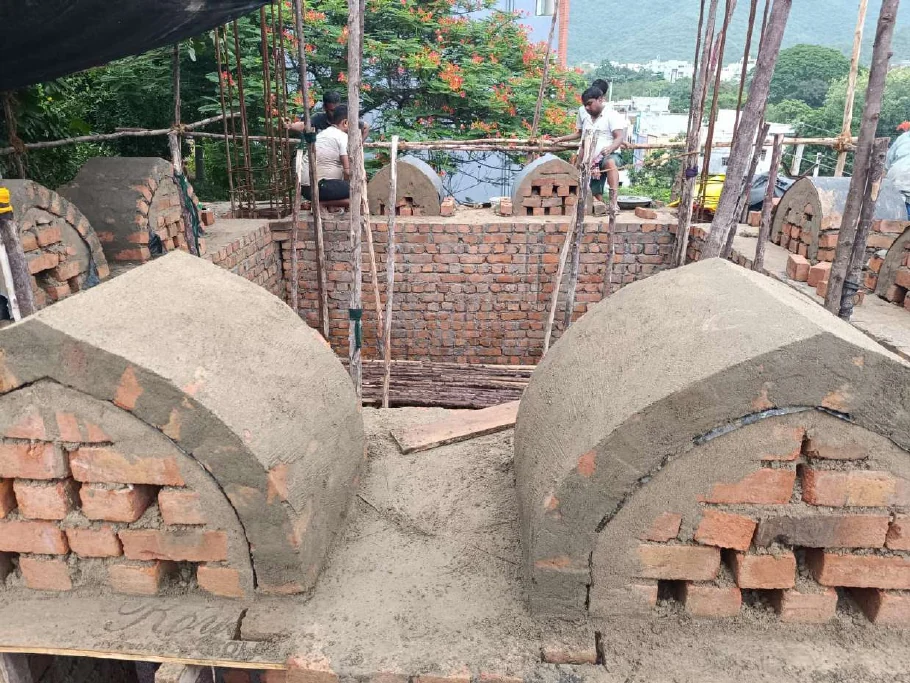
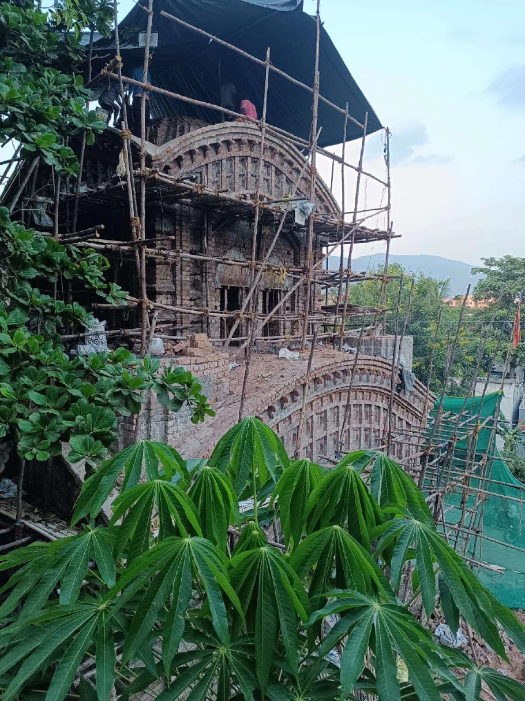
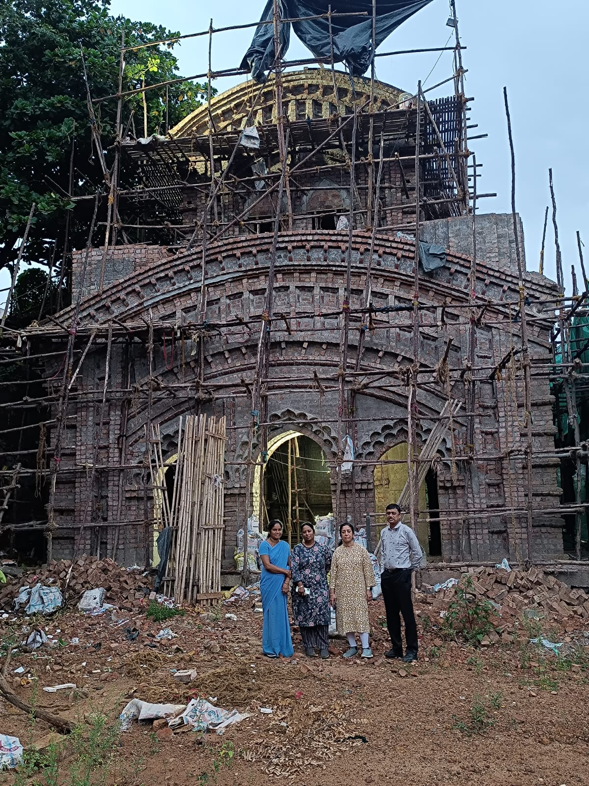
Choose a need close to your heart, or offer towards any part of the construction. Each contribution becomes part of this sacred work.
Help complete the construction, bricks, cement, sand, ironwork, granite, tiles and essential site works.
Offer support for the Kali Mata Moorti, Shivling, sacred thrones, bells and temple shikhars.
Support lighting, fans, chairs, plumbing and the welcoming spaces that serve the community.
| Need | Suggested support |
|---|---|
| Kali Mata Moorti | Rs. 3,75,000/- |
| Shivling | Rs. 75,000/- |
| Thakur Ramkrishna Dev & Maa Sharada Devi | Rs. 2,75,000/- |
| Kali Mata Singhasan | Rs. 1,50,000/- |
| Main door and windows (teak wood) | Rs. 2,00,000/- |
| Shikhar brass - 10 units (both temples) | Rs. 4,40,000/- |
| Brass bells - 2 units (both temples) | Rs. 40,000/- |
| Red bricks - 2 lakh pieces (both temples) | Rs. 13,00,000/- |
| Cement bags - 6,000 bags | Rs. 16,80,000/- |
| Sand (Rajamundry) - 700 tons | Rs. 4,90,000/- |
| Iron rods (Vizag Steel) - 40 tons | Rs. 26,00,000/- |
| Granite - 4,000 sq ft | Rs. 6,00,000/- |
| Tiles - 4,000 sq ft | Rs. 2,00,000/- |
| Grill work and gates | Rs. 5,00,000/- |
| Electrical work and lighting | Rs. 5,00,000/- |
| Shilpies / mason charges for brickwork | Rs. 70,00,000/- |
| Labour charges for concrete work | Rs. 12,00,000/- |
| Retaining wall | Rs. 15,00,000/- |
| Land preparation for construction | Rs. 5,00,000/- |
Each contribution is received as an act of devotion. The Trust offers these lasting expressions of gratitude to devotees who wish to support the temple in a special way.
A contribution of Rs. 10,000 or above welcomes the devotee as a lifetime member of the Trust.
A contributor of Rs. 25,000 or above will be gratefully recognised on the temple’s donor wall.
Choose an “In Memory Of” commemorative stone plate in the name of a late parent or loved one.
For donor-wall or commemorative stone details, please contact the Trust after making your offering. Recognition is a small expression of gratitude; every offering is sacred.
Scan the QR code or use the UPI and bank details below. Please verify the payee name before completing a transfer.
Scan & pay
Donation in full or partial is gratefully accepted.